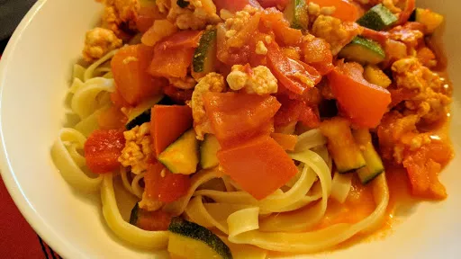

Turkey bolognese
40 mins
Serves 4

Ingredients
-
2
tbsp olive oil
-
1
large onion, chopped
-
2
cloves garlic, finely chopped
-
500
g turkey mince
-
1x 400 g can chopped tomatoes
-
2
tbsp tomato puree
-
300
ml chicken or beef stock
-
250
g spaghetti
-
1
large courgette, finely chopped
-
6
tomatoes, deseeded and chopped
- small handful chopped flat-leaf parsley leaves, to serve
Instructions
- Heat the oil in a large pan and fry the onion and garlic for 4-5 minutes
over a low heat until softened. Stir in the turkey mince and cook for 5 minutes
, stirring frequently. Stir in the chopped tomatoes, tomato puree and stock. Bring to the boil then simmer, uncovered, for 10 minutes
.
- Meanwhile, cook the spaghetti according to the pack instructions. Stir the courgette and fresh tomatoes into the sauce and simmer for 5-6 minutes
. Season.
- Drain the pasta and divide amonst four plates. Spoon over the sauce and serve scattered with parsley
-
kcal
546
-
fat
10 g
-
saturates
2 g
-
carbs
76 g
-
sugar
0 g
-
fibre
6 g
-
protein
43 g
-
salt
0.75 g
BBC Good Food: Low-fat Feasts
Short Link
Long Link